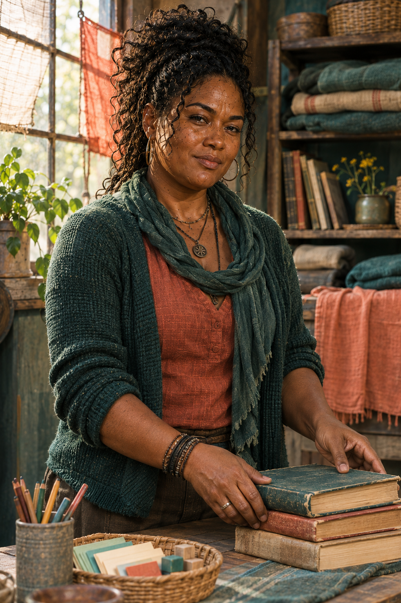

Rotina em movimento
Organiza rodas de leitura, turnos de cuidado e tarefas para que crianças e adultos recuperem alguma estrutura mesmo quando o abrigo precisa partir.
NENHUM ABRIGO É SÓ UM PONTO NO MAPALuke aprendeu a encontrar caminhos. Imani o ensinou a perguntar se havia um lugar seguro para descansar no fim deles. Desde então, cada rota da família inclui espaço para respirar.

Background e nomes criados como proposta autoral para revisão
Antes do Dia D, Imani trabalhava com educação e projetos de leitura para crianças e famílias. Acreditava que aprender não era luxo: era uma maneira de imaginar uma vida além da urgência.
Ela conheceu Luke durante a retirada de um grupo de civis. A rota que ele propôs era rápida para os veículos, mas deixava pouco tempo para os mais cansados. Imani questionou o plano e insistiu em incluir água, abrigo e um ponto de descanso. Luke voltou ao mapa e redesenhou o caminho.
Depois, ela passou a organizar turnos de cuidado e pequenas aulas nos abrigos móveis. Não promete às filhas um mundo intacto. Faz questão de que elas ainda possam aprender, discordar e escolher o que construir.
“Chegar é importante. Chegar com forças para continuar também.”
Imani pensa no tempo depois da travessia: comida, sono, aprendizado e a dignidade de não viver cada hora como se fosse a última.
Organiza rodas de leitura, turnos de cuidado e tarefas para que crianças e adultos recuperem alguma estrutura mesmo quando o abrigo precisa partir.
NENHUM ABRIGO É SÓ UM PONTO NO MAPAEle calcula por onde passar. Ela pergunta quem consegue atravessar. Juntos, aprenderam que estratégia também é preservar as pessoas que dão sentido ao destino.
IMANI + LUKE + ASHA + NYLAO arquivo dos Carver reúne a família inteira e apresenta as duas filhas com seus próprios registros e paletas.
ABRIR ARQUIVO DA FAMÍLIA →